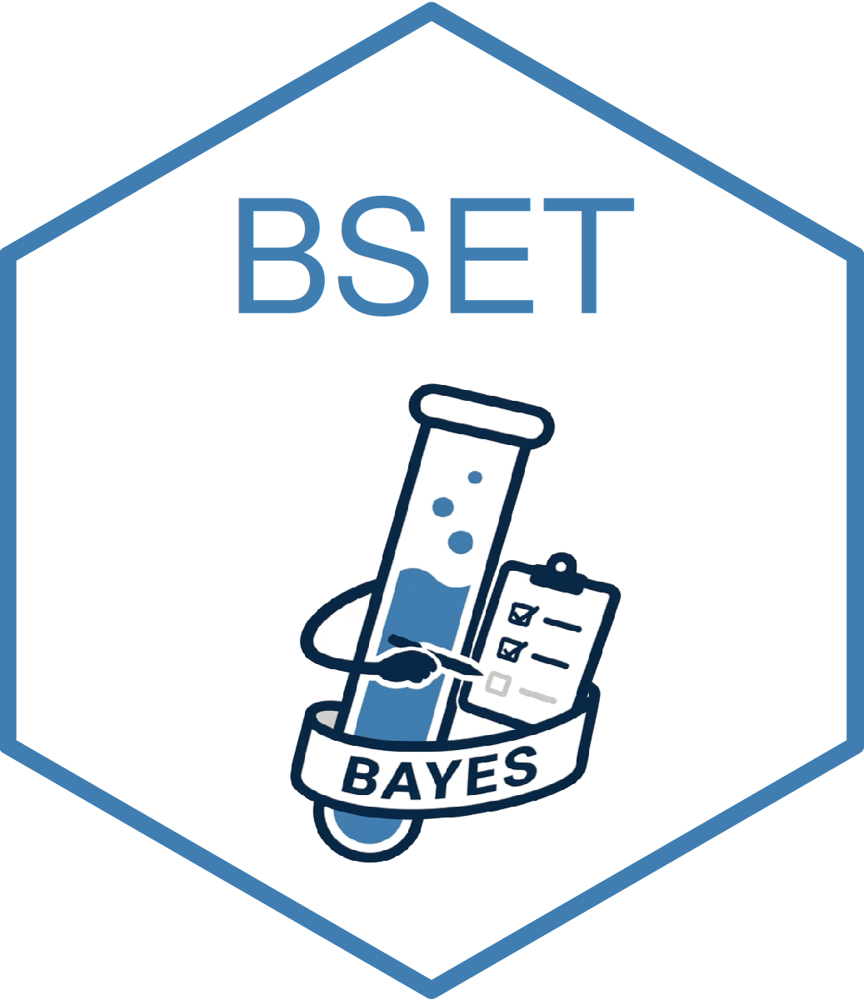

Simulation grid for Parast et al. (2024)
Source:R/data.R
Parast_et_al_2024_simulations_grid.RdA dataset containing the grid of simulation results for Parast et al. (2024).
Format
A data frame with multiple columns:
- setting
The index of the simulation setting.
- simulation
The index of the simulation run.
- n_sample
The sample size used.
- n_chains
The number of MCMC chains used.
- n_iterations
The number of MCMC iterations.
- n_simulations
The total number of simulations.
- timestamp
The timestamp of execution.
- seed
The random seed used.
- BF_alternative
The alternative hypothesis used for the Bayes factor.
- Bayesian_epsilon
The threshold for the Bayesian test.
- frequentist_epsilon
The threshold for the frequentist test.
- Bayesian_CI_upper
The upper bound of the Bayesian credible interval.
- frequentist_CI_upper
The upper bound of the frequentist confidence interval.
- Bayesian_coverage
Logical. Indicates if the true value is in the credible interval.
- frequentist_coverage
Logical. Indicates if the true value is in the confidence interval.
- Bayesian_power
Logical. Indicates if the Bayesian test rejected the null.
- frequentist_power
Logical. Indicates if the frequentist test rejected the null.
Source
Generated using the code in the simulations folder of the
BSET GitHub repository (https://github.com/PietroCarlotti/BSET).